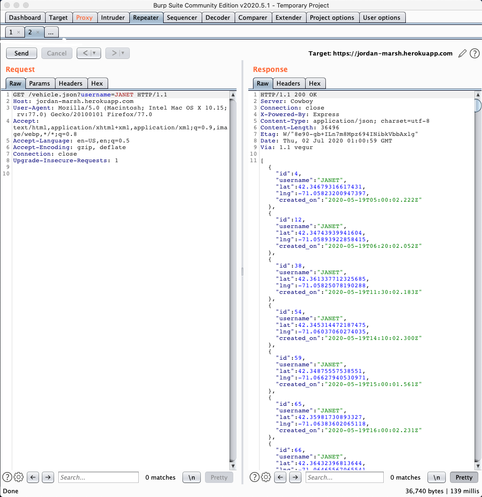
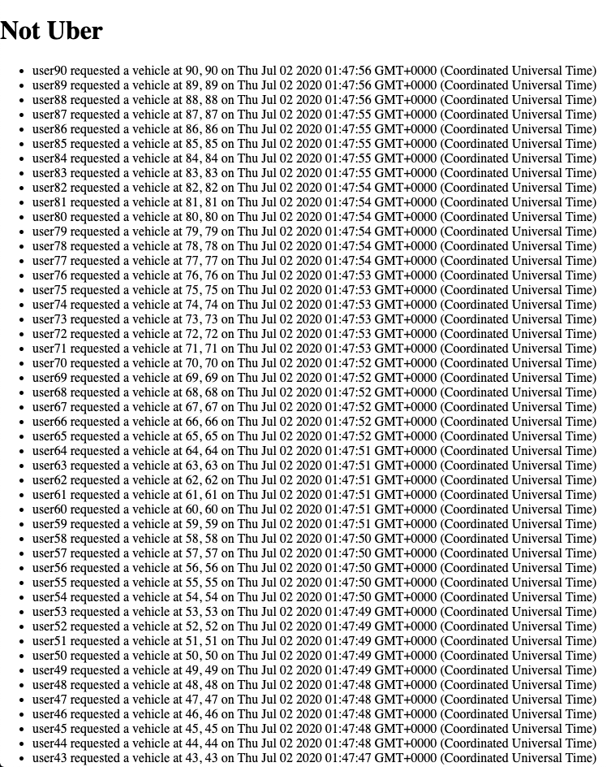

https://jordan-marsh.herokuapp.com/ is a simple server ride-hailing API. POST /rides inserts a passenger's information to server database -- requires username, lat, and lng values. POST /update inserts a vehicle's information to server database -- requires username, lat, lng values. GET /passenger.json requires "username=value" query and displays passengers with username of value. GET /vehicle.json requires "username=value" query and displays vehicles with username of value. GET / displays all entries in passengers database orderd by creation time.
Using the OWASP Top 10, test for the top 10 Web Application Security Risks in https://jordan-marsh.herokuapp.com/.
Tools used include Burp Suite Community Edition v2020.5.1 and FoxyProxy.
This server is vulnerable to attackers accessing sensitive information from restricted databases and excessive requests spamming the database with junk information.
Since the accepted vehicle usernames are hardcoded in the source code, if an attacker is able to access the usernames, they are able to gain access to vehicles database.
var vehicles = ["JANET","NgfcWZmS", "tNEh59TC", "suFKyeZg", "VMerzMH8", "6tWDkKh6", "ajNnfhJj", "bCxY6mCw", "Cq4NX9eE", "mXfkjrFw", "EMYaM9D8", "nZXB8ZHz", "Tkwu74WC", "TnA763WN", "TaR8XyMe", "5KWpnAJN", "uf5ZrXYw"];
Location
POST /UPDATE
Severity of issue
High severity if source code is vulnerable, i.e. pushed to github
Proof of vulnerability
Resolution
Store accepted vehicle usernames in environment variables from .env file.
The routes with response.header("Access-Control-Allow-Origin", "*"); are vulnerable to attackers writing a script and sending a ton of junk requests with fake data to spam the database.
Location
POST /rides, POST /update
Severity of issue
High severity if source code is vulnerable, i.e. pushed to github>
Proof of vulnerability
Resolution
Route middleware from a number of packages that offer this.
This server should implement .env files as well as route middleware for authentication.